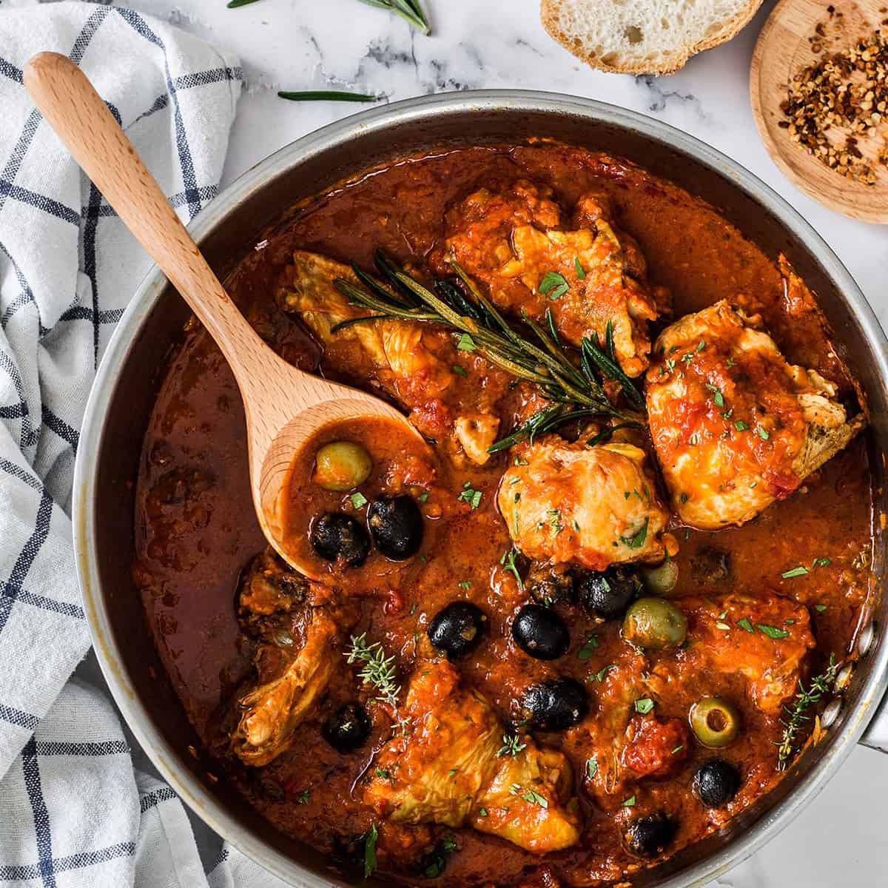

POLLO ALLA CACCIATORA

This recipe is typical of the countryside and is the perfect comfort food for a family dinner!
WHAT YOU NEED
- 8 chicken legs
- 4 cans of tomato puree
- 2 cloves of garlic
- 1.5 litres of chicken stock
- 200 ml of white wine
- 30 to 40 black olives, deseeded
- 100 grams of capers
- 2 anchovies in oil
- Rosemary, thyme and oregano to taste
- Extra virgin olive oil
- Salt and pepper to taste
These amounts will feed 4 people
WHAT YOU DO
-
Start by roasting the chicken on medium heat in some olive oil, skin-side down first. In a separate pot, bring the stock to a simmer.
-
While the chicken is cooking, finely chop the garlic, the anchovies, the capers and the olives.
-
When you have reached a good browning on both sides of the chicken, remove it from the pan and set it aside, while you roast your finely chopped mixture.
-
Deglaze with the white wine, let the alcohol evaporate and then add the tomato puree, cook it for 2-3 minutes.
-
Add the chicken along with enough chicken stock to cover it completely, lower the heat and bring everything to a gentle simmer. Close the lid and let it cook for at least 1 hour, but if you can, leave it for more (the longer the better!).
-
Half way through the cooking add your spices.
-
When the time has passed, remove the lid, raise the heat and let the eccess liquid evaporate until you will be left with a thick sauce covering your beautiful chicken legs. Adjust for salt and pepper and you are done. Enjoy!
BACK TO THE HOMEPAGE